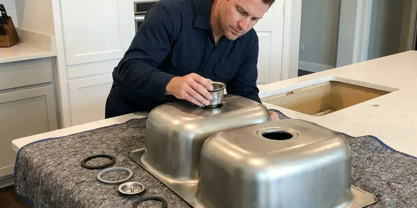

Grease Trap Repair in Wasilla, AK
When your grease trap leaks, smells or backs up in Wasilla, AK, our commercial plumbers find the cause and fix it fast.
- Same-Day Commercial Repairs
- Licensed & Insured
- Satisfaction Guaranteed
- Camera Line Inspections

Fix your failing grease trap before it fails inspection in Wasilla, AK.
Call (928) 470-9007 for a repair visit and a clear explanation of what failed.
Dependable Grease Trap Repair Services in Wasilla, AK
CKN Plumbing helps restaurant owners avoid fines and backups by repairing damaged traps quickly. We explain whether a repair will last or if replacement makes more sense for your business.
Our expertise includes:
- Diagnose and clear severe grease trap clogs.
- Replace corroded or failing grease trap components.
- Repair or replace damaged interceptor baffles.

Additional Kitchen Plumbing Services in Wasilla, AK
Our kitchen plumbing services in Wasilla, AK cover sinks, disposals, dishwashers, and grease traps so your kitchen keeps running without backups or leaks.


Kitchen Sink Installation in Wasilla


Customers
Why Choose CKN Plumbing for Grease Trap Repair in Wasilla, AK?
We use specialized equipment to pinpoint the exact cause of your grease trap issue, whether it's a structural failure, accumulation of FOG, or a blockage in the connected drain lines. Our goal is to provide a lasting repair, not just a temporary fix.
- System Longevity, Prompt repairs extend the life of your grease trap and connected plumbing infrastructure.
- Code Compliance, We make sure all grease trap repairs meet Alaska state and local Wasilla plumbing codes, preventing future issues and fines.
- Preventative Focus, Beyond repairs, we offer advice on maintenance schedules to extend the life of your grease trap and prevent future breakdowns.
Citywide Coverage
No matter where you are located in Wasilla, our team can quickly dispatch to your property. We understand the urgency of grease trap issues and prioritize rapid response across the entire Wasilla area.
Experienced Team
Each plumber at CKN Plumbing has broad hands-on experience with the challenges of grease trap repair. You can trust our crew to diagnose complex issues correctly and implement durable solutions for your business in Wasilla, AK.
Safety-First Approach
We follow confined space safety practices and never enter large interceptors without proper equipment. All grease waste removed during repairs is hauled and disposed of according to regulations.
Trusted Certified Wasilla Plumbing Services Professionals
At CKN Plumbing, we take pride in providing licensed, certified plumbing services throughout Wasilla, AK. Backed by recognized industry credentials, our experienced plumbers combine technical skill with genuine customer care. Whether it is repair, installation, or maintenance, we follow strict safety and quality standards to deliver lasting results you can trust.
Call Us Now PHCC Plumbing Contractor Recognition
PHCC Plumbing Contractor Recognition Better Business Bureau (BBB) Accreditation
Better Business Bureau (BBB) Accreditation Angi Certified Pro
Angi Certified Pro ISO 9001 Quality Management Certification
ISO 9001 Quality Management CertificationLasting Grease Trap Repair Services in Wasilla, AK
Grease Trap Repair vs Replacement Cost in Wasilla, AK
Simple repairs like gasket or tee replacements usually cost far less than a new trap. Major damage such as a cracked tank body, failing concrete or a badly corroded steel unit may make replacement the better value. We compare repair cost, remaining life and compliance risk for you. Older steel traps often rust through and are good candidates for upgrade. We give you options and pricing in writing so you can decide.

Grease Interceptor Clog Removal in Wasilla
The most common grease trap issue is a severe clog caused by accumulated fats, oils, and grease. Our plumbers in Wasilla use specialized hydro-jetting equipment to fully break down and flush out stubborn blockages from grease traps and their connecting drain lines. This method is highly effective for restoring full flow and preventing immediate recurrence, much more so than chemical drain cleaners which can damage pipes.
Emergency Grease Trap Repair in Wasilla
A failed trap during a busy shift can force you to stop service. We respond quickly to grease trap emergencies and work to get you running the same day when possible. Our crews carry common replacement parts and pumping equipment. We can pump, repair and test the trap in one visit in many cases. Quick service limits lost revenue and health code concerns.
Emergency Grease Trap Services in Wasilla, AK
Grease trap failures can happen at the worst possible times, leading to sudden business disruption. CKN Plumbing offers emergency grease trap repair services to address urgent issues like severe backups, overflows, or major leaks. Our rapid response team in Wasilla, AK is equipped to quickly diagnose and implement temporary or permanent solutions to minimize downtime and get your commercial kitchen back to operational status as fast as possible, even after hours.
Flow Control Device Repair in Wasilla
Hydromechanical traps rely on a flow control fitting to keep water moving at the rated speed. If this fitting is missing or clogged, the trap can be overwhelmed and grease escapes. We inspect, clean or replace flow control devices during repair visits. We also check the air intake that allows the device to work properly. Correct flow control is necessary for a trap to pass inspection.
Commercial Grease Trap Repair in Wasilla
For restaurants, cafeterias, and food service establishments in Wasilla, a functioning grease trap is a must. We offer emergency and scheduled repairs for all commercial grease interceptors, addressing issues like clogged lines, broken baffles, or structural damage. Our team understands the high volume of FOG in commercial settings and provides durable solutions to prevent operational downtime and ensure health code compliance. We work efficiently to minimize disruption to your business.
Lid, Gasket and Riser Repair in Wasilla, AK
Damaged lids and failed gaskets let odors escape and create safety hazards. Outdoor risers can crack from vehicle traffic or ground movement. We replace lids, install new gaskets and repair or replace risers. Traffic-rated lids are installed where trucks or cars drive over the interceptor. These repairs keep odors in and keep people protected.

Preventative Grease Trap Maintenance & Repair in Wasilla, AK
While our focus is on repair, we also emphasize preventative maintenance to reduce the need for emergency services. After a repair, we can advise on sensible cleaning schedules, proper waste disposal practices, and regular inspections to keep your grease trap in top condition. This proactive approach helps extend the lifespan of your system and prevent costly breakdowns, which is especially important for businesses in Wasilla, AK facing high usage demands.
Grease Trap Repair Near Me in Wasilla, AK
Our crews are stationed nearby and can reach your kitchen fast. We bring parts, jetting equipment and cameras on every repair call. You get a fast fix and a clear explanation of the work.
Restaurant owners searching for grease trap repair near me can rely on our local commercial team. We know the inspection standards in the area and how to meet them. Repairs are done right so you avoid repeat problems.
CKN Plumbing at a Glance
- Licensed and insured plumbers serving Wasilla, AK
- Same-day appointments and 24/7 emergency response
- Clear written estimates, no hidden fees
- 4.9-star rated by 309+ Alaska customers
Wasilla Map
Wasilla Information
- Population
- 9,945
- Area codes
- Local
- Service area
- Wasilla and communities within 40 miles
- Nearby
- South Lakes, Tanaina, North Lakes, Meadow Lakes
Ground movement and weather stress grease interceptors, lids and seals, so prompt repairs keep commercial kitchens in Wasilla, AK compliant and odor free. Permafrost in colder parts of Alaska complicates any buried plumbing, and thawing ground can cause settling that cracks pipes.
Expert Services
Trust our professionals for reliable CKN Plumbing solutions in Wasilla, AK.
Our Specialized Plumbing Services in Wasilla, AK
At CKN Plumbing, we provide a complete range of plumbing services across Wasilla, AK. From leak detection to full system installations, our team ensures fast, precise, and affordable service for both residential and commercial properties. Explore our core services below:


How Our Grease Trap Repair Process Works in Wasilla, AK
Our grease trap repair process is designed for efficiency and minimal disruption to your business. We follow a clear, professional approach to get your system back in working order.
Request a Quote
Call (928) 470-9007 or fill out our online form to schedule your grease trap repair service. We will gather initial information about your issue and set up a workable appointment time.
Diagnosis & Inspection
Our certified plumber will arrive on site to thoroughly inspect your grease trap and connected plumbing. We use advanced diagnostic tools to find the exact cause of the problem, whether it's a clog, leak, or component failure.
Expert Repair
Based on our diagnosis, we will explain the repair options and provide a clear, upfront estimate. Once approved, our team will perform the necessary repairs using high-quality parts and industry-best practices, ensuring a lasting solution.
Frequently Asked Questions About Grease Trap Repair in Wasilla
Minor repairs like gaskets, tees or flow control fittings usually cost $200 to $800. Larger repairs such as baffle rebuilds, riser replacement or lid upgrades can run $1,000 to $3,000 or more. We provide a written estimate before work begins.
Staff can replace a lid gasket on some small traps, but most repairs require plumbing knowledge and proper waste handling. Professional repair ensures the trap meets code.
Grease traps are smaller, typically located inside or near the kitchen, and are suitable for low-volume establishments. Grease interceptors are much larger, often installed underground outside the building, and are designed to handle the high FOG volumes from large restaurants and commercial facilities. Both serve the same purpose of preventing FOGs from entering the sewer system.
To prevent future problems, implement strict FOG management practices, including scraping plates into the trash before washing, regularly cleaning your grease trap (typically every 1 to 3 months depending on usage), and avoiding pouring grease down drains. Regular professional maintenance from CKN Plumbing can also significantly extend the life and efficiency of your system.
Yes, we warranty our workmanship and use parts that carry manufacturer warranties. If a repair we made fails, we return and make it right.
Yes, our plumbers are experienced in repairing a wide range of grease trap types, including passive hydromechanical units, automatic grease removal units (AGRUs), and large gravity grease interceptors. We work with common brands like Zurn, Big Dipper, Thermaco, and Schier, and more.
Yes, CKN Plumbing stands behind the quality of our work. We offer a warranty on all parts and labor for grease trap repairs, giving you peace of mind. Specific warranty details will be provided at the time of service, ensuring you know your investment is protected.
The primary cause is the accumulation of FOG (Fats, Oils, and Greases) which solidifies and creates blockages. Other causes include structural damage from age or impact, corrosion of internal components, improper installation, or lack of regular maintenance and cleaning.
What People Are Saying About Our Plumbing Experts?

Emily R.
I called CKN Plumbing for plumbing repair, and the technician was fast, polite, and thorough. They explained the problem clearly and fixed it the same day. I will definitely hire them again. Highly recommended!
Plumbing Repair · Gateway, AK
Laura S.
I scheduled a water heater replacement, and the team made the process smooth and affordable. The new unit works perfectly, and they cleaned up after completing the job.
Water Heater Replacement · North Lakes, AK
Daniel K.
A pipe burst at 11 pm and they actually answered. The plumber showed up within the hour, shut everything down, and had us back to normal the next morning. Could not ask for more.
Emergency Plumbing · South Lakes, AK
James P.
Our commercial plumbing system had a leak under the sink, and CKN Plumbing handled it professionally. The plumbers arrived quickly and restored everything without disruption to our customers.
Commercial Plumbing · North Lakes, AK
Mark T.
When our office needed drain cleaning, CKN Plumbing provided quick, reliable service. The plumber arrived on time and made sure every drain flowed perfectly before leaving. Very satisfied.
Drain Cleaning · Wasilla, AK
Patricia H.
We had a slab leak that two other companies could not find. CKN Plumbing located it in under an hour, explained our options, and the price matched the quote to the dollar.
Slab Leak Repair · Knik-Fairview, AK